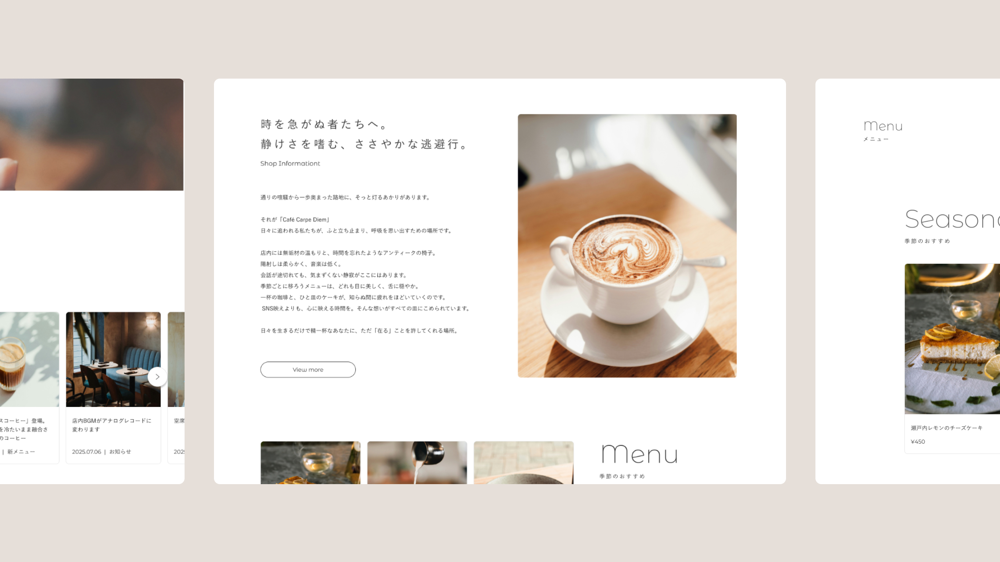
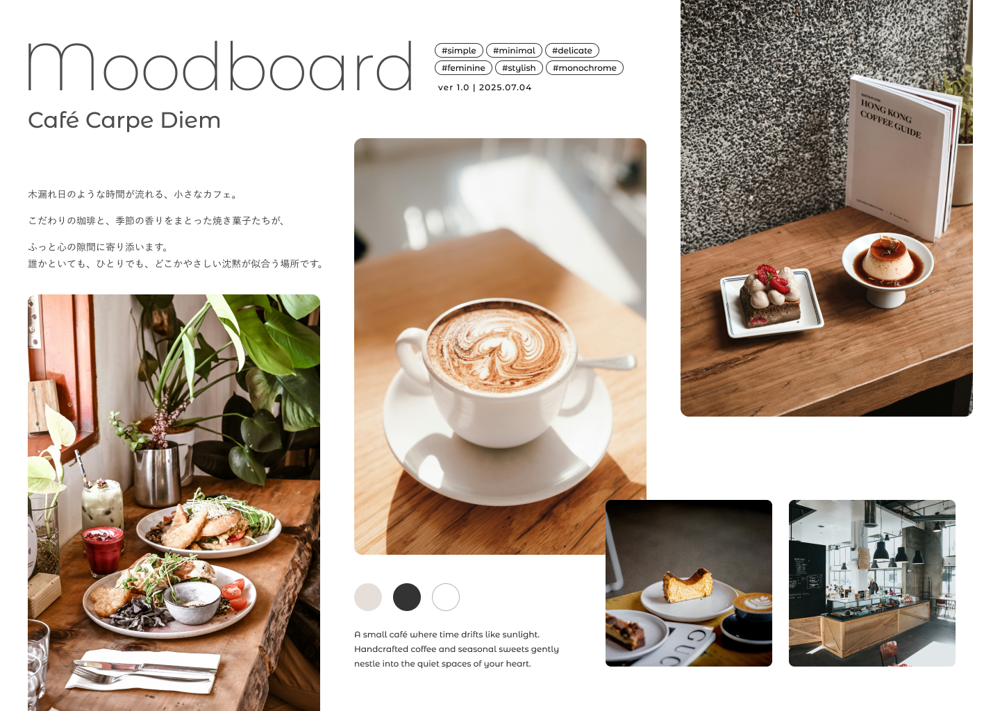
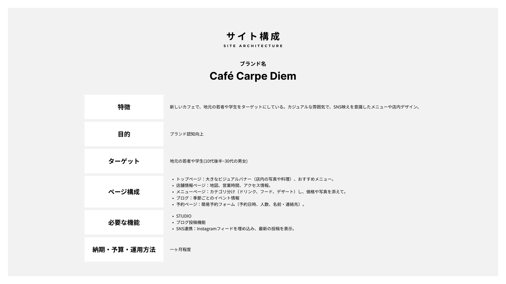
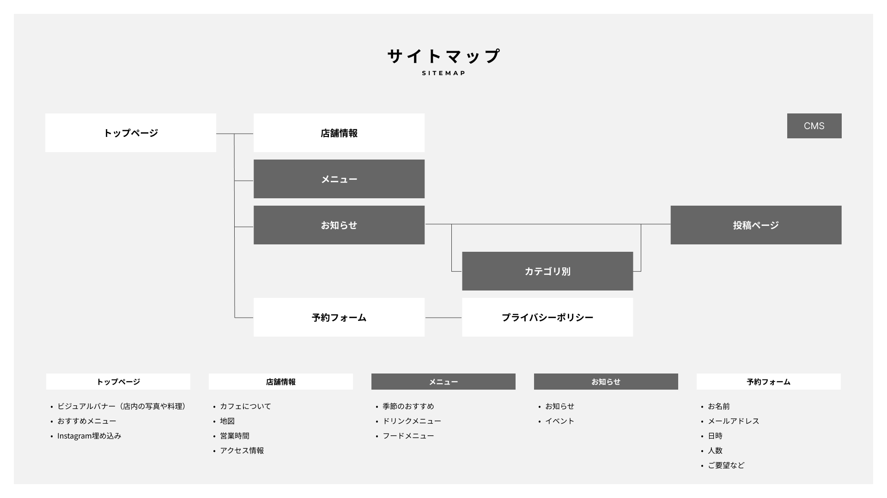

Café Carpe Diem
Direction | Design | Development
-
- 概要
- 架空のカフェ「Café Carpe Diem」のwebサイトを制作しました。CMSでの更新を想定し、情報が整然と並んで見れるカード型レイアウトを採用。お洒落な店内の雰囲気が伝わるようデザインしました。
-
- 設定
-
- ブランド名：「Café Carpe Diem」
- 特徴：新しいカフェで、地元の若者や学生をターゲットにしている。落ち着ける雰囲気で、SNS映えを意識したメニューや店内デザイン。
- 必要な機能：店舗情報、メニュー、予約フォーム、SNSリンク、ギャラリー（店内や料理の写真）、ブログ（季節ごとのイベント情報）
-
- 構成
-
- トップページ：大きなビジュアルバナー（店内の写真や料理）、おすすめメニュー。
- 店舗情報ページ：地図、営業時間、アクセス情報。
- メニューページ：カテゴリ分け（ドリンク、フード、デザート）し、価格や写真を添えて。
- ブログ：季節ごとのイベント情報
- 予約ページ：簡易予約フォーム（予約日時、人数、名前・連絡先）。
- SNS連携：Instagramフィードを埋め込み、最新の投稿を表示。
-
- デザイン
- モノクロを基調にしたシンプル＆ミニマルなデザイン。カード型レイアウトを採用し、繊細で女性らしいお洒落な雰囲気を演出しています。
-
- 制作期間
-
企画・構成：3日
デザイン：1週間
コーディング：3週間
-
- 使用ツール
- Illustrator / Photoshop / Figma / VScode



デザインの方向性を決めるために作成したムードボード

サイト設計用の資料

サイトマップ